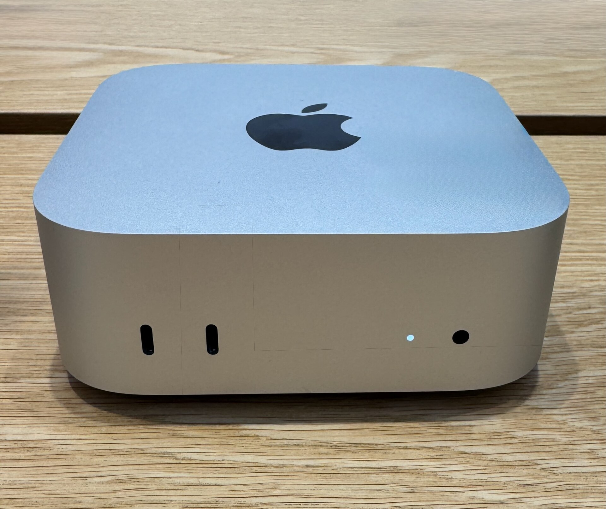
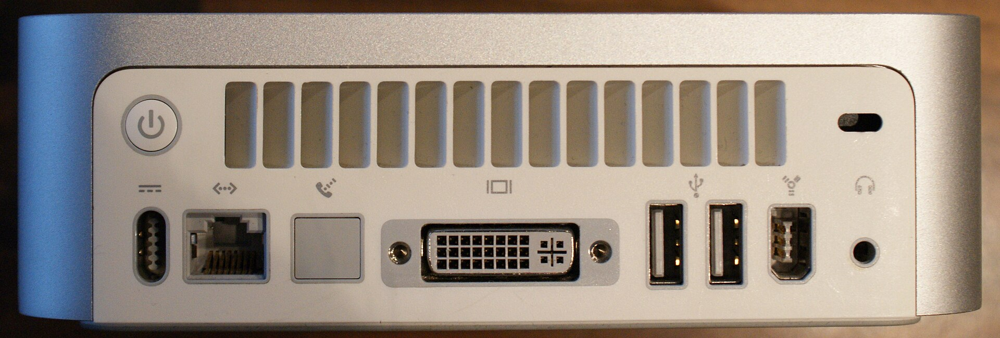
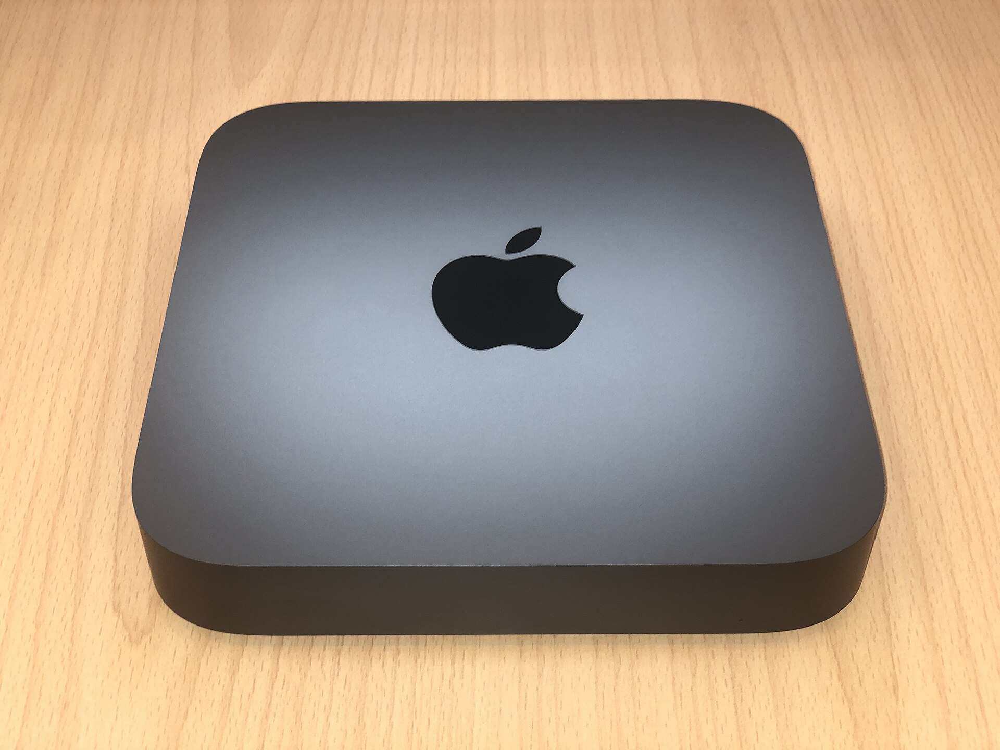
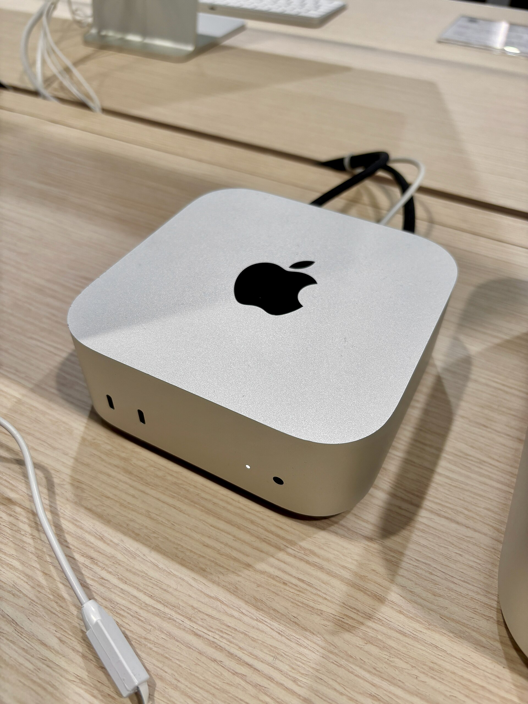
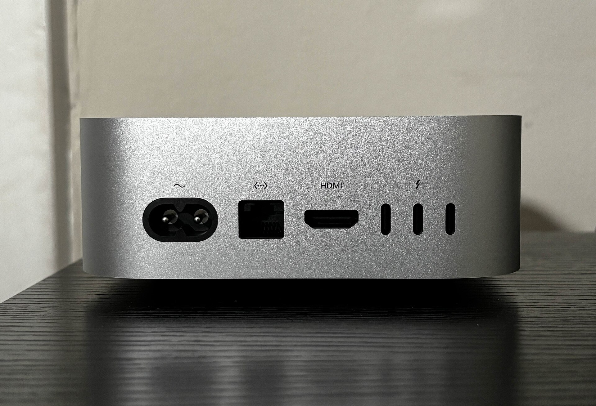

大きさと端子
筐体はM4のときと同じ。手のひらに乗る12.7cm角で、高さは5cm。重さはM6で0.67kg、M5 Proで0.73kg。
- 前面：USB-C（10Gb/s）×2、イヤホン端子
- 背面：電源、Ethernet、HDMI、Thunderbolt×3
- 違い：ThunderboltはM6が4（40Gb/s）、M5 Proが5（120Gb/s）
要するに、キーボードやUSBメモリを前から挿せて、ディスプレイと電源は後ろにまとまる。机の上がすっきりするのはこの配置のおかげだと思う。

2026年9月に出た新型を、買う側の目線で調べた。M4のときより5万5千円高い。それでも買いなのかを整理した記録。
先に結論。M4より前のMacからなら買っていい。構成はM6の16GB／512GB（185,800円）から考える。M4を持っているなら見送り。
新型Mac miniの発表を見て、まず値段に目がいった。149,800円から。M4が出た2024年の秋は94,800円だったので、2年で5万5千円上がっている。
要するに「安くて速い小さいMac」という立ち位置が、まだ成り立っているのかが気になった。中身はM6になってかなり速くなったらしい。値上がり分に見合うのか、どの構成を選べば後悔しないのかを調べた。


Appleの直販価格で計算する。報道に出ていない組み合わせは、出ている差額から自分で計算した推定値で、伝票に「推定」と付く。
選んだ構成の合計は、税込みでこうなる。内訳は見積書のとおり。
149,800円
M4発売時の最小構成（94,800円）より55,000円高い
発表時の国内報道で確認できた値段。全部税込。

見た目は同じ。変わったのは中身と、背面の端子の速さ。

M4世代の背面。M6も端子の並びは同じ
| 項目 | M4（2024） | M6（2026） |
|---|---|---|
| CPU | 10コア | 12コア |
| GPU | 10コア | 12コア＋Neural Accelerator |
| メモリ帯域 | 120GB/s | 170GB/s（16GBは153GB/s） |
| メモリ上限 | 32GB | 32GB |
| 有線LAN | 1Gb | 2.5Gb（10Gbは選択） |
| 無線 | Wi‑Fi 6E／BT 5.3 | Wi‑Fi 7／BT 6 |
| AI性能 | — | M4比 最大4倍（公称） |
| 最安構成 | 94,800円 | 149,800円 |
筐体はM4のときと同じ。手のひらに乗る12.7cm角で、高さは5cm。重さはM6で0.67kg、M5 Proで0.73kg。
要するに、キーボードやUSBメモリを前から挿せて、ディスプレイと電源は後ろにまとまる。机の上がすっきりするのはこの配置のおかげだと思う。
差額は150,000円。何が増えるのかを並べると、判断はわりと簡単だった。
| 項目 | M6 | M5 Pro | 効いてくる人 |
|---|---|---|---|
| 値段 | 149,800円〜 | 299,800円〜 | — |
| CPU／GPU | 12／12コア | 15／16コア（最大18／20） | 動画の書き出し |
| メモリ | 16〜32GB | 24〜64GB | 大きいLLM |
| メモリ帯域 | 170GB/s | 307GB/s | LLMの生成速度 |
| Thunderbolt | 4（40Gb/s） | 5（120Gb/s） | 高速な外付けSSD |
| SSD上限 | 2TB | 8TB | 素材を本体に置く人 |
| 複数台連結 | なし | あり | AIクラスタを組む人 |
「効いてくる人」の列に自分が当てはまらないなら、M6で十分ということ。
いまのMacは？ ├─ Intel・M1 ───→ 買い ├─ M2・M3 │ ├─ 困ってない → 待ち │ └─ AIを試す → 買い（24GB〜） └─ M4 ──────→ 見送り
Appleは理由を出していない。ただ2026年はDRAM不足で、5月に256GB構成の販売終了、6月25日にMac全体の値上げがあった。M4の最安は6月の時点で134,800円になっていて、今回の上げ幅は15,000円。要するに大半は部品代の話だと思う。
自分は足りないと思う。OSと普段のアプリだけでも結構埋まる。後から公式に増やす手段はないので、+36,000円で512GBにしておく方が後悔が少ない。外付けSSDで逃げる手もあるが、机の上がごちゃつく。
LM Studioのプロンプト処理でM4比最大4.8倍、とAppleは言っている。GPUの各コアにNeural Acceleratorが入ったのが効いているらしい。第三者の計測はまだ追えていないので、ここは保留にしておく。
使える。新しいSiri（Siri AI）はmacOS 27でベータで、最初から日本語に対応している。ただしサーバー側で動く機能には1日の利用上限があり、Appleは「今後有料で拡大する予定」と書いている。ここは少し引っかかった。
外付けSSDを最速で使いたい人以外は困らないと思う。40Gb/sあれば4Kモニタ2枚と普通の外付けSSDは問題ない。120Gb/sが要るならM5 Pro。
「安い入門Mac」という見方はもう当てはまらない。小さくて静かで速い、ちゃんとしたMac。そう思って値段を見ると、悪い取引ではないことにしておく。